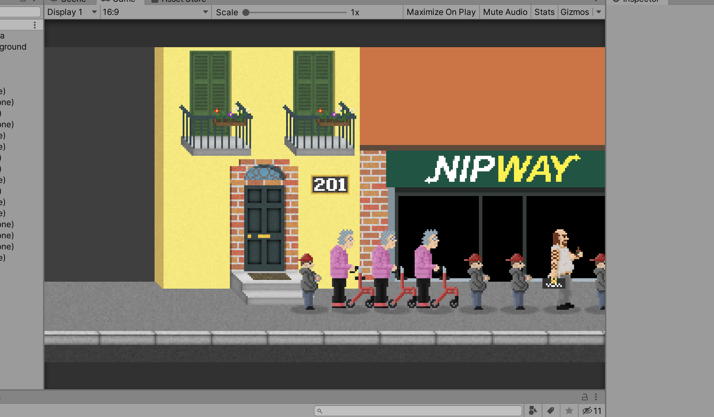

Youtube
Our four fathers created a holy channel on a platform called Youtube. Named We Accidentally Everything meant to provide video material to entertain the masses of the earth.
Our four fathers created a holy channel on a platform called Youtube. Named We Accidentally Everything meant to provide video material to entertain the masses of the earth.
Not too long after creating the Youtube channel our founder J0P sneezed one night and miraculously a Discord server appeared from the deepest depths of the abyss onto the surface of this planet.
A cult's first meeting.
2015 -
A server made in partnership with WAEverything and The Fishpire. Server died due to insufficient funding.
2015 - 2016
While not directly under the WAEverything umbarella. mc.j3.fi was the predecessor and foundation to which the Holisti server was built upon.
2017 - 2023
Died with the public one.
Season that never saw the light of day somewhere in 2017. Nipde completely accidentally built Turun tuomiokirkko there right to the spawn. Luckily J3_rmu spotted this mistake after the church was built.
2019 - 2019
Random human experiment for an anarchy server. It wasn't meant to be public but somehow it got public. The details are a little foggy what happened with that one.
2020 - 2023
We pay and everyone else get's to play for free! Turns out that did not work out in the long run.
2023 -
This little Minecraft server is running on a random sortment of parts in a literal closet branded as a server rack.
2019 - 2019
Crushed by deadlines, sleep deprived but somehow Nipde made it in time. We even had a trailer made and posted to our Youtube channel. It was fun the month or so that it lasted. The server died while updating the pack and a wild memory leak appeared.
2019 - 2019
A project that Nipde worked on passionately. WAE Tech was supposed to be a Modpack where you could turn the world into a wasteland with the machines (and tech) you have if you are not careful. When reaching the critical waste point a sub-modpack would activate unlocking a post apocalyptic elements.
Biggest elements were RP, cars, guns and own versions of some custom worlds. There were even ideas like portals and stranger things thrown out there. We had main menus and everything ready, but the bigger content was still unimplemented and ultimately the project ended before reaching it's public state.
Played couple of times. Was fun.
We feel very attacked.
Never got out of the pre-pre-alpha stage.
No matter how hard PiiNi tried no one else was interested in running it. Sad times.
This one is just the many we've had. From a simple html only websites to full on utilizing the most bloated frameworks we've tried them all.
This is still something Nipde would like to do.
A game where you wait in line. Sounds boring at first but is actually packed with action when you engage in combat with the drunk man on the street.
asd
Most of the documentation has been lost.
Basically a murder mystery game, lowcraft etc.
Norway vs Denmark vs Finland Minecraft tournament. Finland won the tournament while Norwegian were clearly cheating and using exploits. The Finnish team consisted mostly from WAE members.